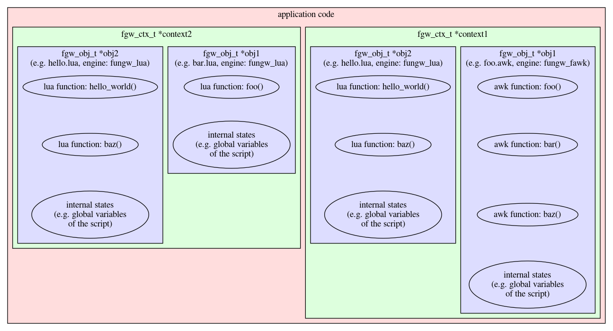

The most important basic type is function (fgw_func_t). A function has a return value and a flexible number of arguments. The return value and arguments are all of fgw_arg_t, containing a type and a value.
Functions are registered by name in a the hash table of the fungw context. Functions are provided by uniquely named objects - a list of available objects is also registered in the fungw context.
A fungw context is a collection of states that describes a full, self contained configuration and state of a fungw instance. It can be taken as an instance of a plugin system. An application can maintain multiple independent fungw contexts, but the typical case is that an application creates only one. Fungw contexts can be created and discarded any time.
An object is a group of related functions and potentially opaque internal states. Fungw is not object oriented in the sense that each object is an independent entity in a flat list of objects and there's no inheritance or other complex relationship between objects. Each object has a name that is unique within the fungw context. If the object has internal states, these states can be accessed only through function calls the object provides.

In the example drawn above, the application keeps two independent fungw contexts: context1 (green, right) and context2 (green, left). Each context hosts two objects (purple). Context's obj1 is a fawk script that provides 3 functions (foo, bar and baz) and has some internal states (fawk global variables). The other object in context1 is implemented in lua. Context2 has a similar setup. Context2
Both context1 and context2 loaded hello.lua, but these are two separate instances, because they are in two separate objects. Although the object names match (obj2), the objects are in two separate contexts. Thus the two instances of hello.lua will not share any lua code or variables (but are loaded in memory as duplicates).
The application may call function fungw foo() within a context. If it is called in context1, it's obj1, foo.awk's foo(). If it's called in context2m it's obj1, bar.lua's foo(). Once a function is called within a context, it may do further calls, but those calls will always stay within the same context.
Objects are really instances of engines. An engine is the actual implementation that is instantiated into an object. It can be instantiated into multiple independent objects in the same or in multiple fungw contexts. That means the code of an engine is shared by all objects created from it, but data (states, variables) is unique to the object.
An engine is a library that implements code that can be used to create object. The implementation should be thread safe and multi-instance, storing all internal state in a per object storage allocated when the object is initialized. The engine implements and registers all functions the object will expose to fungw.
For example a buddy allocator library is implemented as an engine. The application, within an already initialized fungw context, may create multiple objects that will be each an independent instance of the buddy allocator, each controlling its own allocations, not knowing about other instances.
Another typical example is script engines. The implementation for loading and executing lua scripts is an engine. When the application needs to load three different lua scripts, the engine is called three times to register three objects. Each object represents the full internal state of one of the scripts, including the script code parsed, global variables and functions registered. Different scripts may register different functions, so although the engine was the same for all three objects, the actual API (the functions exposed) may differ in each object.
On the above pictured example, two engines are used: fungw_fawk and fungw_lua. These each implement their own (fawk or lua) scripting. That means the engine has the code for the interpreter for the given language, but no script. A script is loaded by creating a new object: the object's code is provided by the engine, but data (the script) by the script file. In the above example the lua engine is loaded only once, although it creates 3 independent objects running separate lua scripts.
The function hash is a hash table in a fungw context that lists all functions currently registered in the context, with enough low level information that fungw can perform a call to the function.
Each public function is normally registered in the function hash by two names: the globally unique object_name.function_name and the non-unique short function_name. Since function names must be unique within the hash, short name collisions need to be resolved.
Fungw applies a first-come-first-served method for selecting the short name: the first object that tries to register the given short name will succeed, subsequent requests with the same name are denied. When short name can not be registered object_name.function_name is still registered, so the function is accessible.
When a function is unregistered, the long name is removed from the hash. If the short name in the hash corresponds to this function, it is also removed and a substitution (another function with the same short name) is searched and if found, inserted. If there are multiple candidates (registered in different objects) for the substitutions, one is picked randomly.
This mechanism is designed so that callers do not need to know the name of the object that provides a common function. Multiple objects can provide the same function using the same name. When the caller uses a short name of a function, the caller assumes the different implementations are compatible.
On the above pictured example, when a single-call to baz() in context1 is done, only one of obj1's baz() or obj2's baz() is called. Which one of the two is picked depends on the order of objects created. Such call is useful if different objects implement the same functionality using the same name so it doesn't matter which one is called - "call any available implementation, just don't do it twice". When a specific implementation is required, e.g. the application needs to one implemented in hello.lua, obj2.baz() should be called. If both needs to be called ("call all implementations, in random order" - typical for delivering events), fgw_*call_all() should be used.
A function has:
All arguments are input arguments because it would not be feasible in every supported scripting language to use output arguments. The return value is always present, but can be empty (a void pointer with value of 0).
The number of arguments is not fixed. The caller may call the function with any amount of arguments. The callee gets an argc/argv[] pair and can decide if the call is valid, optionally looking at the number and type of arguments.
Any function call may succeed or fail. Optionally the caller gets an indication of this in the success indicator (accessible in C). When the call fails, the return value is set to empty.
argv[0] contains a pointer to the fungw function being called and optionally the user_call_ctx.
Every call stack (or chain) should originate in the host application. Which means it's generally the host application that is running first and the first fungw call is always initiated by the application. In other words, the main loop and handling external events (user input, network events, I/O in general, timers, or anything async) should be implemented by the application, not by fungw engines (e.g. scripts).
Especially any threading or async event handling done by the application, keeping in mind that fungw objects have non-thread-local internal states. If the application has threads, it is the application's responsibility to make sure parallel instances of the same object is never being executed. If an engine, e.g. a script language, implements threading or async event handling, that should not be used with fungw.
The application may extend the list of types supported by registering new, custom types.